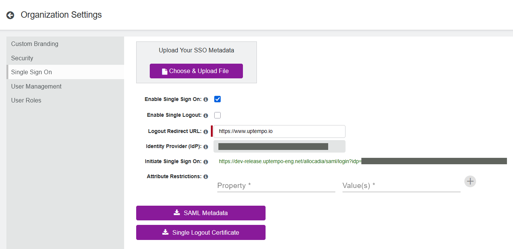

Set up single sign-on (SSO) in Uptempo
Single Sign-On (SSO) lets you manage user access and credentials for Uptempo in a central system outside of Uptempo, called an identity provider (IdP).
How SSO works
When you configure SSO, users don't use a username and password to log in to Uptempo directly. Instead, the user authenticates through your IdP (such as Entra ID, Okta, etc.), and Uptempo grants access based on that authentication.
Uptempo supports the SAML 2.0 protocol for SSO. Setting up SSO requires an exchange of SAML metadata between Uptempo and your IdP:
Your IdP's SAML metadata tells Uptempo how to trust and communicate with your IdP. You download this metadata as a file from your IdP, and upload it to your Uptempo instance.
Uptempo's SAML configuration values tell your IdP how to trust and communicate with Uptempo. You enter these values when you configure Uptempo as an SSO app in your IdP.
After you have set up SSO, users can log in to Uptempo in two ways:
- IdP-initiated login
Users log into the IdP, then access Uptempo by selecting it in a list of apps or from a dashboard of app icons.
- SP-initiated login
Users visit a special Uptempo URL, and are automatically redirected to the IdP to log in. After they log in to the IdP successfully, they are returned to Uptempo.
Supported standard SAML attributes
Uptempo supports the following standard SAML attributes. Attribute names and values are case-sensitive.
Required
The user's email address. This must match the email address that was used to invite the user to an Uptempo budget.
- firstname
Optional
The user's first name.
If specified along with
lastname, Uptempo uses this attribute to set the user's first name the first time they log in, and to update it whenever the attribute changes.If not specified, Uptempo uses the default value Unnamed.
- lastname
Optional
The user's last name.
If specified along with
firstname, Uptempo uses this attribute to set the user's last name the first time they log in, and to update it whenever the attribute changes.If not specified, Uptempo uses the default value User.
- title
Optional
The user's job title.
Configure SSO for your Uptempo instance
Before you begin
To configure SSO in Uptempo, you need:
Administrator access to your Uptempo instance.
Access to your IdP, to export its SAML metadata file and to complete SSO app setup on the IdP side.
In many organizations, the IdP is owned and configured by the IT team.
Add Uptempo to your IdP and get the SAML metadata file
Before you can configure SSO in Uptempo, you must obtain a SAML metadata file from your IdP. The steps to do this vary depending on which IdP your organization uses.
In most cases, you first need to add Uptempo to the IdP as an application before you can download the metadata file.
Configure Uptempo as an SSO app in your IdP
Use the following values to set up Uptempo as an SSO app in your IdP:
- Entity ID
The Entity ID is not the same as your server URL, and its format is different for each Uptempo environment:
secure:com:allocadia:vancouver:bc:canada:productionna2:https://na2.allocadia.comeu1:https://eu1.allocadia.com
If your environment isn't listed here, or the value shown doesn't match, use the Entity ID from the SAML metadata file you download from Uptempo (see Configure SSO settings in Uptempo) — that file is always the source of truth.
- ACS URL (Assertion Consumer Service)
<SERVER-URL>/allocadia/saml/SSO- SP-initiated (or RP-initiated) login URL
<SERVER-URL>/allocadia/saml/login
In the ACS URL and SP-initiated login URL above,
<SERVER-URL>is the Uptempo server your organization's instance is hosted on, such as:https://secure.uptempo.iohttps://na2.uptempo.iohttps://eu1.uptempo.io
You may have multiple server URLs if you have multiple Uptempo instances, such as standby, sandbox, or similar instances. In this case, you set up SSO separately for each instance.
If you're not sure which server URL to use, contact your Customer Success Manager or Uptempo Support.
The exact steps to add these values vary by IdP. For help, consult your IdP's documentation, or contact your IdP's support.
After you have created Uptempo as an application in the IdP, you should be able to download the SAML metadata file from the IdP that you need to configure SSO on the Uptempo side.
Download your IdP's metadata file
Here are basic instructions for where to find the XML metadata file in a variety of commonly used IdPs.
For more detailed instructions, or if your organization uses an IdP that isn't listed here, consult your IdP's documentation, or contact your IdP's support.
In the Okta Admin Console, open your Uptempo app, then download the IdP metadata from the Sign On tab.
In the Microsoft Entra admin center, open your Uptempo enterprise application, then download the Federation Metadata XML from the Single sign-on page.
In the Google Admin console, open your Uptempo custom SAML app, then download the IdP metadata from the SAML app's details page.
In the OneLogin administration console, open your Uptempo app, then download the SAML metadata from the SSO tab.
In the PingOne Admin Console, open your Uptempo app, then download the SAML metadata from the Configuration tab.
Configure SSO settings in Uptempo
After you have downloaded the SAML metadata file from your IdP, you can upload it to Uptempo to configure and enable SSO access to your Uptempo instance.
Configure and enable SSO in Uptempo
In Uptempo, click
 Settings in the navigation menu. The Organization Settings page opens.
Settings in the navigation menu. The Organization Settings page opens.In the Organization Settings menu, click Single Sign-On.
Click Choose & Upload File. Select the SAML metadata file you downloaded from your IdP to upload it to Uptempo.
After the file uploads successfully, Uptempo displays the remaining SSO configuration fields. The following fields are automatically populated using the details from the SAML metadata file you uploaded:
- Identity Provider (IdP)
Your IdP's Entity ID for the Uptempo application, as provided in the SAML metadata file.
- Initiate Single Sign On
The URL to use for SP-initiated login (also called RP-initiated login) to your Uptempo instance.
In the Logout Redirect URL field, enter the URL that you want users to be sent to when they sign out of Uptempo. Click anywhere outside the field to save its value.
This field is required.
Optional: Configure optional additional settings if needed. For details, see Configure additional Uptempo SSO settings.
Click
 SAML Metadata to download Uptempo's SAML metadata file.
SAML Metadata to download Uptempo's SAML metadata file.You will need to upload this file to your IdP to complete SSO setup.
To activate SSO in your Uptempo instance, select Enable Single Sign On.

Return to your IdP and open the settings for the Uptempo application. Upload the SAML Metadata file you downloaded from Uptempo (in step 7) to complete the SSO setup.
For help with this step, consult your IdP's documentation, or contact your IdP's support.
{kind=link}
SSO is now enabled in your Uptempo instance with immediate effect. Your organization's Uptempo users can use SSO to log in to Uptempo, either directly from your IdP, or using the Initiate Single Sign On URL shown in your Uptempo SSO settings.
Configure additional Uptempo SSO settings
To enable SSO in Uptempo, the only setting that you must configure is the Logout Redirect URL. All other settings on the Single Sign On configuration page are optional. You can configure these optional settings before you enable SSO in Uptempo, or at any time while SSO is active in the instance.
Optional: Configure single logout
When enabled, the Single Logout option also logs users out of the IdP (and all other SSO applications controlled by the IdP) when they log out of Uptempo. This can improve security by preventing lingering open sessions.
Configure single logout
In Uptempo, open the Single Sign On settings page.
Navigate to
Settings > Organization Settings > Single Sign-On.
Select the option Enable Single Logout to turn single logout on.
Optional: If your IdP requires a verification certificate for single logout, click
Single Logout Certificate to download the verification certificate. Upload this file in your IdP's settings for the Uptempo application.For help with this step, consult your IdP's documentation, or contact your IdP's support.
Single logout is now active in your Uptempo instance. When your organization's Uptempo users log out of Uptempo, they will also be automatically logged out of all other SSO applications controlled by your IdP.
To turn single logout off again, deselect the Enable Single Logout option.
Optional: Configure SAML attribute restrictions
Use the Attribute Restrictions setting to specify access restrictions based on attributes and values in each user's SAML assertion. When these restrictions are in effect, a user can only log in to Uptempo successfully if their SAML assertion contains all the specified attributes, and at least one of the accepted values for each attribute.
You can use this feature as an additional layer of control over who can access your Uptempo instance. For example, you can use it to restrict access to only users who belong to particular groups, or users who have a particular employment type (such as only full-time employees, but not contractors or interns).
How SAML attribute restrictions work
To use the Attribute Restrictions feature, configure the assertion in your IdP's SAML response to include the attributes and values you want to use to restrict access.
After you specify at least one restriction in Uptempo, the system evaluates every SSO login attempt by checking the user's SAML assertion against the active restrictions. To successfully log in, the user must satisfy all restrictions. If one or more restrictions are not satisfied, the login attempt is rejected.
Each SAML attribute restriction consists of an attribute name, and one or more values for that attribute to match. Within each restriction, multiple values are evaluated as OR conditions:
The restriction satisfied when the assertion contains at least one of the allowed values for the specified attribute.
The restriction is not satisfied when any of the following apply:
The assertion does not contain at least one of the allowed values for the specified attribute.
The assertion does not contain a value (null/empty) for the specified attribute.
The assertion does not contain the specified attribute.
If you specify multiple restrictions (multiple attributes), these are evaluated as AND conditions. To pass, the assertion must satisfy all active restrictions (by containing all specified attributes, and at least one allowed value for each attribute).
Configure SAML attribute restrictions
In Uptempo, open the Single Sign On settings page.
Navigate to
Settings > Organization Settings > Single Sign-On.
On the Attribute Restrictions setting, enter the name of the SAML attribute you want to match against in the Property field.
Attribute names are not case-sensitive. If
attributenameis specified in the Property field,AttributeNamein the SAML assertion is considered a match.
Enter one or more values of the specified SAML attribute that you want to accept in the Value(s) field.
Attributes values are case-sensitive. If
AttributeValueis specified the Value(s) field,attributevaluein the SAML assertion is not considered a match.Separate multiple values with a comma:
value1,value2,value3.
To save the restriction, click Add. The restriction is saved, and a new line with empty Property and Value(s) fields appears.
Optional: To add further attribute restrictions, repeat steps 2-4.
All specified SAML attribute restrictions are now active in your Uptempo instance with immediate effect.
To remove any existing restriction, click  Delete on the restriction twice.
Delete on the restriction twice.